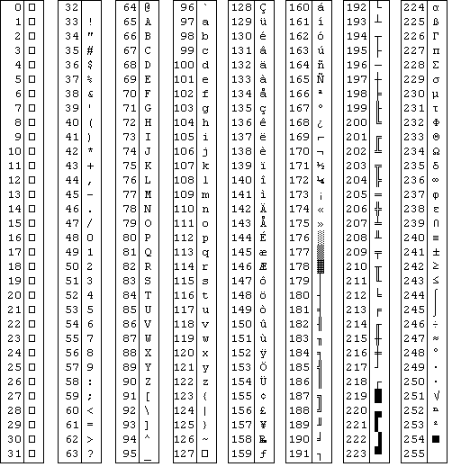

chr (8) = backspace
chr (9) = tab
char (10) = newline
You can also get (on most systems), the MS-DOS character set by using
the command setscreen ("msdos").
This is the character
set after the setscreen ("msdos") command was given.

Click the button to launch the program to display the character set in Turing.